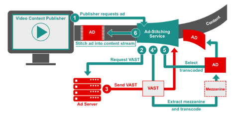

SSAI Highlights
Look for the blue callouts that highlight special considerations when working with SSAI.

This guide is part of a series of Programmatic Guides that IAB Tech Lab is providing to address the many technical components involved in executing programmatic ad campaigns. This guide focuses on the use cases involved in a programmatic campaign for connected TV (CTV). And since CTV often works with partners in server-side ad insertion (SSAI), special callouts highlight additional information where working with SSAI is concerned.
This guide is not all-inclusive; rather, it outlines a set of use cases and provides details that are relevant to each use case. Each use case is summarized in a Quick Start Overview and then later in the guide, covered in more detail. Links to additional resources and relevant Tech Lab standards for more details are included for each use case.
The goal of this document is to provide guidance for optimizing programmatic effectiveness in the supply chain for CTV campaigns using available resources developed by IAB Tech Lab and beyond. The guidance in this document addresses challenges faced in CTV with the following parties:
Digital video continues to mature as a medium for advertising, while the connected television (CTV) market has only begun to leverage the programmatic ad technology initially developed for digital video. Programmatic CTV opens new opportunities for expanding reach into homes across screens and devices. Traditional television has lacked the level of functionality and insight that became the norm across web browsers and mobile apps. Now, with CTV and advances in technology and improvements to standards, the industry has seen increasing parity in capabilities between CTV and digital video. Some of the challenges in CTV, however, lie in delivery, addressability, measurement, and fraud.
This guide summarizes the best practices for using the most recent ad technologies for achieving the best results in CTV advertising. As a guide, it highlights key considerations and directs you to more in-depth information where needed. We’ve broken down the technical components of a CTV campaign into the following use cases:
These use cases are summarized at a high level in the following section, and then each use case is broken down into more details.
This guide is intended for individuals that work in the buying, selling, and development of video advertising in CTV. Ad tech professionals who work with publisher players, ad servers, ad creative developers, measurement & verification providers, as well as demand side platforms & exchanges, media buyers, ad trafficking and operations, partner integration/onboarding engineers and Product Development can all benefit from the guidance offered in this documentation. The content is somewhat technical as it references different specifications and guidance documentation, but anyone who works with systems that handle video ad transactions should find the details useful.
The first television was introduced in 1928. It took until the 1980s for cable set top boxes to become mainstream. And it wasn’t until recent years that smart TVs (connected TVs) became mainstream. However, before CTV, we had the Internet, and shortly thereafter, digital video.
With programmatic ad-serving technology, digital video saw exponential growth. Since the initial launch of IAB Tech Lab’s Video Ad Serving Template (VAST) in 2008, digital video could begin to scale ad sales in the same way website publishers could with their display ads. With improvements to VAST and the addition of other technologies, ad tech for digital video became more sophisticated, and digital video quality improved.
With the explosion of devices that enabled consumers to watch their favorite videos anywhere, connected TVs became the next step in bringing that sophisticated ad tech to prime-time screens in people’s living rooms. But ad tech for CTV is still catching up. The good news is that much of the ad tech developed for digital video can also work in CTV.
As existing standards are updated to support CTV, and new standards are considered, this guide offers the best way to address the same challenges in CTV programmatic campaigns that first emerged as digital video matured. From the functional challenges of delivering assets to targeting and measurement to concerns over brand safety and ad fraud, the technical standards that have fueled the growth of digital video can also help CTV to scale and grow.
With SSAI, a client media player on the user device (client) no longer has to make ad server calls to deliver an ad. This is ideal for midroll, live streaming, and broadcast scenarios such as a news or sporting event where the latency of loading and unloading a player/ad on the client can cause errors and result in a poor user experience. Instead, an SSAI provider makes the ad requests on the client’s behalf, which has passed along details about the viewing session such as location, device type, and other data that can be useful in selecting the most relevant ads. After an ad has been selected, the SSAI provider matches the ad quality to that of the content and stitches the ad into the content stream, which is seamlessly delivered to the client player in a single stream. VAST 4 supports the increasingly common “ad-stitching” method for stitching linear ads into a video or audio content stream and sending it to players on client devices. While VAST 4 has specific items for SSAI, some developers still use VAST 3 to execute. For version-specific ads from advertisers, VAST 2, 3 or 4 all work today.
Look for the blue callouts that highlight special considerations when working with SSAI.
The following section outlines typical use cases broken down into functional areas such as Delivery, Targeting, Measurement, Interactivity, Brand Safety, and Ad Fraud. For simplification, we’ve highlighted commonly encountered challenges for each functional topic, as well as which specific Tech Lab standards should be implemented to address these issues. This section of the guidebook can be thought of somewhat as an executive summary, where a deep technical understanding isn’t necessarily required to grasp the concepts described in each use case.
Those interested in the critical details of applying the technical standards cited within this section should refer to the relevant portions within the Implementation section of this guidebook.Quality: As advertisers look to extend their digital video campaigns to include CTV, one of the primary considerations is the screen size on which ads are viewed. Larger screens mean that higher asset quality and overall consumer experience are even more important. In addition, CTV ad delivery and the need to support various devices have led to a deeper focus on Server-Side Ad Insertion (SSAI). For asset submission in CTV, and especially when working with SSAI, a mezzanine file is required. A mezzanine file is encoded at the highest possible quality and used to encode ready-to-serve ads at lower resolutions and smaller file size. Guidelines for creative file submission are outlined the Digital Video Ad Formats Guidelines.
Ad Request: VAST has historically been an ad response format, with the ad request left as an integration exercise. With VAST 4.1, a standard set of macros can be used to communicate information about the impression and player environment in the ad request. This enables ad servers to generate the best possible VAST response for any impression and reduce delivery errors. We recommend the use of [Macros and CATS]
Campaign Tracking: Another challenge in video ad delivery has been the lack of the ability to uniquely identify a creative asset across different media or screens. This is useful for reporting, caching creative assets, and frequency capping. We recommend advertisers provide [Universal AdID]
Separation of Media from Executable Code: The complexity of digital video has given rise to the need to separate the linear video file from any executable code like creative interactive API files or measurement scripts. While the VAST media file nodes has accepted various media files in the past, interactive APIs may not always be executed. In VPAID, the code and the media file are bundled together, resulting in latency and making it impossible to serve an ad through SSAI. Hence, with VAST 4.x, the deprecation of VPAID was announced in favor of providing separate locations for interactive and measurement scripts that ensure the media file is always easily accessible from the VAST tag. We recommend advertisers and their partners provide media files and executable codes separately to be included in VAST verification and creative nodes [VPAID deprecation]
Server-side Ad Insertion implementations present a number of unique complexities that could result in a multitude of errors if executed improperly. For example, custom work may be required between a client player and an SSAI provider to negotiate the logic of allowing a skip button for ads. Premium long-form content viewed on high resolution screens sets the expectation of an equally high-quality ad experience that can be delivered across various connections and device types. Ad servers and other entities need access to additional data from publishers for a clearer view of the details of how and where their media is being shown.
To enable error free execution of SSAI delivery, we recommend the following resources:Serving the right ad to the right audience at the right time and place has become ad tech’s favorite mantra. As the industry grapples with the loss of traditional identifiers, the CTV space has often had to forgo the luxuries of persistent user IDs, given the limitations of some environments. Some of the existing addressability solutions for CTV do rely to a degree on identifying audiences through attributes collected from devices such as User Agent (UA), IP Address, and app store IDs. And while these methods may not be immediately at risk of disappearing, with privacy in mind, the direction of the industry at large may be viewed as an indicator of what’s to come for video. We recommend Advertisers review our guidance on:
You may also want to follow IAB Tech Lab's Project Rearc for guidance on addressability, privacy, and accountability.
Beyond identity-based targeting, tools such as content and audience taxonomies exist as methods for enhancing the ability to provide relevant ads. We recommend the use of[Content/Audience Taxonomy, content Macros, and CATS ] by sellers to inform the advertisers about the content that aids targeting.In SSAI enabled environments, there is a general lack of standard identifiers, but even in cases where they do exist, stitching services may not have access to a client player’s identifier, which can complicate personalization and ad tracking. As a result, the ad-stitching service must identify devices where ads play by using a combination of other methods like IFA, User Agent, and App ID.
Measurement and verification are key requirements in digital advertising and can be key differentiators between Connected TV (CTV) advertising and traditional broadcast TV. There are three critical scenarios for measurement and verification of video advertising on CTV and other consumer devices:
Measurement events are usually communicated by the stitching service on the client player’s behalf, making it challenging to verify these events actually occurred on the client device. SSAI environments typically do not support the execution of 3rd party scripts. VPAID does not work in the SSAI environment. Where a client can execute measurement scripts and OM SDK is available, it should be used. For example, when SSAI delivery is on an iOS device or web browser, OM SDK can provide measurement.
Until recently, VPAID historically had been the preferred mechanism for providing a means to deliver interactive video ads. But due to issues surrounding security, latency, and a lack of support in certain environments, VPAID is rapidly becoming outdated and is in the process of being deprecated in favor of the newer Secure Interactive Media Interface Definition (SIMID) standard.
Often an ad developer or publisher might not have the resources to enable complex and custom interactive components for a campaign. In these scenarios where resources and capabilities may be limited, VAST 4.x has introduced interactive templates to simplify the execution of common interactive use cases, such as end cards, which require only some minimal visual assets (images, CSS, etc.) and some instructions/metadata in the VAST tag.Overall interactive ads are still not commonly seen in many SSAI use cases yet today, though the application is not impossible. Again, due to a lack of support for 3rd party scripts and deprecation of the technology, VPAID is not an option for delivering interactive ads in most SSAI environments. Yet with SIMID interactive creatives can be rendered in the SSAI context.
Generally speaking, there are three main areas where brand safety standards can be applied; categorization, communication, and post-bid action.
Delivering an ad in the wrong context can not only negatively impact the performance of a campaign but can have lasting effects on a brand’s image and favorability. Providing accurate categorization through the consistent application of a standardized set of taxonomies is key in achieving enough insight for marketers to make decisions into which content is most relevant for displaying their ads. Similarly, efforts have been made to develop a common language for determining where it is safe to run ads, as well as the ability to express levels of risk for sensitive content that may be suitable for one marketer but not for others. We recommend adopting [Content Taxonomy, GARM Suitability Framework] standards. Beyond categorization, it is vital to allow for the independent verification of brand safety through standard tools used for communicating important information about an impression and the content where the ad impression will be displayed, such as categories, URLs, and device metadata using [VAST Macros and Open Measurement content URL] Despite the tools available to maintain a rigorous brand safety approach, often, a brand safety decision can only be reached post-bid when an ad is being delivered. In cases where content is considered unsuitable for the brand, buyers prefer to stop the ad from being rendered. The ability to block or swap ads that were deemed “unsuitable” has historically been done either via proprietary methods or via VPAID for video ads (which is not available for SSAI). It is important to note that challenges with post-bid processing on CTV devices mean that publishers and tech vendors should do their best to support pre-bid scenarios where possible. The Open Measurement team is working on supporting this in a clean and transparent manner. This is not a capability typically available on mobile or CTV at the moment, but is worth being aware of for the longer term.As more and more demand develops for the premium, high-quality ad experiences that CTV provides,, the industry has seen an increasing number of attempts to exploit vulnerabilities inherent to the technology. Some of the most significant violations have occurred through the spoofing of platforms, devices,, and IPs to misrepresent higher-value inventory or even monetize completely invalid requests. The key to fighting fraud in these environments is through the application of a rigorous set of transparency standards. [App-ads.txt, ads.cert, SupplyChain Object, User Agent, App store Id guides ]
The following section delves into the most salient technical details on which Tech Lab standards support the CTV use cases described in the previous section. The basis for implementing each of these standards has been laid out to provide an understanding of the minimal technical requirements for achieving Ad Delivery, Targeting, Measurement, Interactivity, Brand Safety, and Fraud Prevention. This section is likely most useful for engineers, product managers, and others interested in the technical mechanics of executing ad campaigns in CTV environments.
Compliance is a two-party effort that involves, at a minimum, the media player and the ad server. Both must meet certain expectations so that VAST can be truly interoperable and encourage growth in the marketplace.
VAST-compliant ad servers must be able to serve ad responses that conform to the VAST XML schema defined in the VAST 4.x specification. Ad servers must also be able to receive the subsequent tracking and error requests that result from the media player’s execution of the VAST ad response. Tables for each VAST XML element define which are required in a VAST response.
VAST-compliant media players and SSAI systems must be able to play the ad in a VAST response according to the instructions provided by the VAST ad response and according to the media player’s declared format support, which includes:
<!--comment-->). In general, the media player need only accept ads that it requests and ad server responses should be provided in the ad format intended. For example, VAST allows for compliance while only supporting a subset of ad types (described in VAST 4.x section 2.3.1). For example, if a standard Linear Ad is requested but a Skippable Linear Ad is received, the media player is not expected to display the Skippable Linear Ad nor should the media player play the Skippable Ad as a Linear Ad (without skip controls).
The following features must be supported for general functionality:Details for proper ad display and VAST support, including player support requirement notes for each XML element, are defined throughout the VAST 4.x specification.
VAST 4.x includes a media container for the mezzanine file, which is the raw high-quality video file that the publisher can use to produce the best quality file where needed. A mezzanine file is required in ad-stitched executions. In addition to the mezzanine file, VAST 4.x requires either an adaptive stream ready-to-serve file or a minimum of three media files at different levels of quality: high, medium, and low. Identifying the quality levels of three media files enables the media player to more quickly find the appropriate file needed for a given environment for client-side ready-to-serve execution.
When you submit a video ad for linear placement, you should provide three ready-to-serve versions at quality levels for high, medium, and low as indicated in the following table (along with a mezzanine file described in the next section). These files can be compiled into an adaptive streaming file or referenced from an interactive file.
Ad developers should refer to the Digital Video Ad Format Guidelines for encoding recommendations.| Video Setting | Specification | Notes |
|---|---|---|
| Bit Rate | 50Mbps VBR or 15-30 CBR | 50 Mb for original source (preferred) |
| Aspect Ratio | 16:9 (HD) or 4:3 (SD) | 16:9 is preferred"letter-boxing" (black bars) should be avoided |
| Resolution (1x1 pixels) | For aspect ratio 16:9
|
No burned in pillar boxing or letterboxingFuture support for 4k |
| Color Space | 4:2:0 or 4:2:2 YUV | |
| Frame Rate | Depending on region, use one of the following frame rates:
|
Native frame rate preferred |
| Codec |
|
Apple ProRes preferred but may exceed file size threshold for some vendorsHEVC may not yet be widely accepted |
| Format |
|
|
| Scan Type | Progressive | No intra-field motion (blended frames) |
| Leaders (slate) | Video creative should be submitted without leaders (slate) before content | |
| Configuration |
|
| Audio Setting | Specification | Notes |
|---|---|---|
| Audio Format | AAC | PCM is allowed for the mezzanine file but should not be used in any transcoded files used to serve the ad. |
| Audio Bitrate | 192 kbps (AAC) | |
| Audio Channel | 2 channel sterio mix L&R | 5.1 Do;by audio configuration may be added (see EMA Mezzanine File Creation and Specification) |
| Audio Sample Rate | 48kHz | |
| Audio Levels | DB - 12 (average) |
The Digital Video Ad Format Guidelines accommodate high-quality video needs for cross-screen linear advertising in mobile, desktop, and TV online. File submission recommendations detail “ready-to-serve” files for streaming, progressive download, and adaptive bitrate streaming formats. Providing the source mezzanine file is also recommended so that the publisher may transcode the file best suited to the environment into which it will serve.
Following these guidelines for video ad file submission will help streamline ad development and placement operations while providing the best experience possible in the user’s device for the bandwidth available.VAST player macros enable publisher’s media players to provide additional data points with ad requests, script requests, andtrackers. They allow for passing details such as the user agent and app where the VAST ad is serving.
VAST player macros are to be filled by the party that performs VAST HTTP requests. Most commonly, for both VAST URLs and tracking pixel URLs, this would be the video player that’s executing the ad or the SSAI server on behalf of the video player. Information that may be available via HTTP headers is not always consistent, and often publishers do not have control over what values are forwarded. Hence providing macros such as [DEVICEUA], [PAGEURL], and [SERVERUA] are recommended. These macros are also increasingly important as the industry moves away from VPAID and HTTP headers. For a complete list of available macros, please refer to the IAB VAST macro list page.While the IAB Tech Lab has an official list of 50+ macros, it’s technically not possible to support all macros in any given HTTP request simply due to length limitations. Refer to the SSAI VAST Macro Guidance: Version 1.0 for the full list of recommended macros to use for sharing basic user agent, environment, and content details that are critical to verification partners and buyers.
Critical for identifying the environment into which the ad will serve. Measurement partners most commonly use these macros for verification against fraud and buyer’s brand safety rules.
Used to help verification partners categorize and evaluate the content against a buyer’s brand safety rules.
Used to help identify the type of player technology that publisher uses.
RTB transactions are initiated when an exchange or other supply source sends a bid request to a bidder. The bid request consists of the top-level bid request object, at least one impression object, and may include additional optional objects providing impression context.
The top-level object (i.e., in JSON, the unnamed outer object) is denoted asBidRequest in the model. Of its direct subordinates, only Imp is technically required since it is fundamental to describing the impression being sold and it requires at least one of Banner (which may allow multiple formats), Video, Audio, and Native to define the type of impression (i.e., whichever one or more the publisher is willing to accept; although a bid will be for exactly one of those specified). An impression can optionally be subject to a private marketplace.
Other subordinates to the BidRequest provide various forms of information to assist bidders in making targeting and pricing decisions. This includes details about the user, the device they’re using, the location of either, regulatory constraints, and the content and media in which the impression will occur.
| Attribute | Type | Description |
|---|---|---|
| mimes | string array; required | Content MIME types supported (video/x-ms-wmv, video/mp4, etc.) |
| minduration | integer; recommended | Minimum video ad duration (in seconds) |
| maxduration | integer; recommended | Maximum video ad duration (in seconds) |
| protocols | integer array; recommended | Array of supported video protocols. Refer to list 5.8 in OpenRTB documentation. At least one supported protocol must be specified in either the protocol or protocols attribute. |
| protocol | integer; DEPRECATED | NOTE: Deprecated in favor of protocols.Supported video protocol. Refer to list 5.8 in OpenRTB documentation. At least one supported protocol must be specified in either the protocol or protocols attribute. |
text
text
If you have questions about CTV, SSAI, or any of the standards that support these technologies, send an email to support to create a ticket.